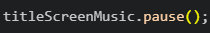

The purpose of this webpage is to showcase the functions that we have used within our code that have not been taught to us via our teacher, Mr. Krnic and that our team has found to be beneficial and even crucial to our work on this game and its many parts.
Similar to the play function that was previously explained, this function also gives users the power over which audio track or video file
is playing at a certain time. Furthermore, like the play function as well, it is used multiple times in the code for our game which allows
us to toggle the music and the video depending on the conditions that the player has or has not fulfilled. It is also like the play function
in the sense that it can be assigned to anything from an element via jQuery and even a variable.

Once again, this function is assigned to a variable which allows us to toggle on or off the title screen music (as the variable name suggests)
to the liking of the programmers.
This function was crucial to many parts of our code and if we had not found this piece of code, we would have much harder time pulling off
certain aspects of our game. The way that this function acts is that you have a body that executes after a time that has been set by the
programmer, in milliseconds. Once that amount of time has passed, then the code will then execute and it will only execute once rather than the
multiple times that some other functions have been documented to do. Additionally, the time that can be set can also be the parameter that has
been specified within a function. For example, if there were a function in which the parameter was a certain time, the time value for the setTimeout
function can be that value.
This function enabled us to add a specific attribute once a certain event in our game occured. For example, we used this function to loop a piece
of music once you enter a battle, so that there's always music playing to keep the player engaged in our game.
This function allows our game to direct the player to a different webpage. For example, we use this function to send the player back to the home webpage
if they decide they no longer want to play the game.
This function allows us to round down random numbers we generate so that we can avoid decimals. We chose floor instead of round, since
we wanted to take as many measures as possible to make the player's random damage numbers smaller, so that we could make our game harder,
though this adjustment is just a small step to making this game a bit more unfavouring to the player.